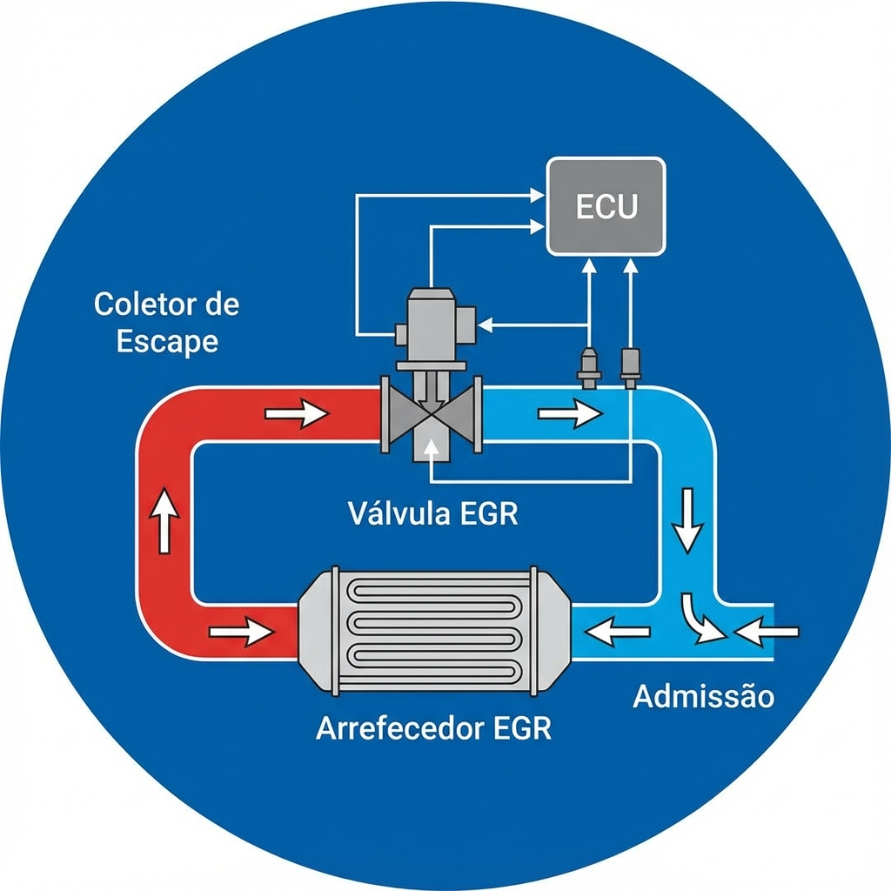

- Reduz temperatura de combustão
- Diminui emissões de NOx (óxidos de azoto)
- Recircula gases de escape para admissão
- Pneumática (acionada por vácuo)
- Elétrica (motor DC ou stepper)

Função Principal
Tipos de Válvulas
Sintomas Típicos
Causas Principais
Função e Estrutura
Tipos de Regeneração
Problemas Frequentes
Multiplexagem CAN
EGR e DPF são essenciais para as normas Euro
Diagnóstico requer scanner e conhecimento CAN
Anular = Chumbo na inspeção + Crime ambiental
Manutenção preventiva: viagens longas regulares!
Obrigado pela atenção!